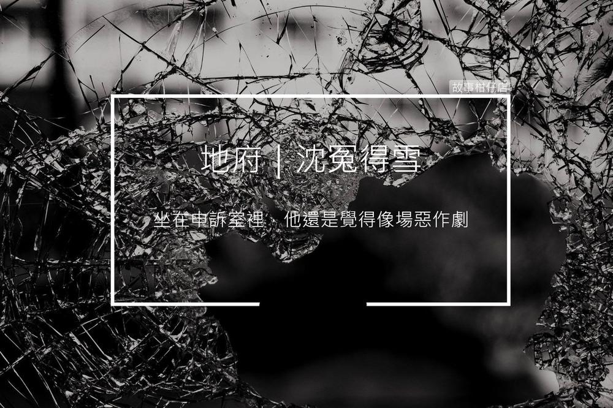

沉冤得雪

剪溜：祢們有退休制度嗎？
老鳥引渡人：......基本上，經過各處主管、十殿長官核准後，便可自行指定投胎人家與出生生辰。
〈沉冤得雪〉
真沒想到，他連明志就這麼死了。
坐在申訴室裡，連明志還是覺得像一場惡作劇。四周都是鏡子，桌前坐了一個穿著格子襯衫的傢伙，儼然是個宅男。
宅男打了個哈欠，說：「我是客訴部主管，你有什麼冤屈？」
連明志激動地說：「我本來可以活到八十歲，還不是我老爸送的那輛爛車害我早死，趕快讓我去投胎！」
宅男連叩三下桌面，四周鏡子如電影一般，開始播放連明志死前開車的場景，「哦，你開得很快呢。」宅男邊點頭邊說。
「開得快就該死嗎？還不是我爸媽硬要我回家吃飯！」連明志吼道，隨即頹唐低喃：「我命怎麼這麼慘……」
「是嗎？這條命可是你自己選的。」
「放屁！你們不都說什麼命中注定？我哪有得選？！」
「別人我不敢說。但你，的確是自己選的。」宅男又叩了兩下桌面，鏡子閃爍幾下，畫面突然換成連明志身穿一襲黑西裝，笑著和一群同樣衣著的人道別的場景。
「這、這是什麼？我不認識那些人啊！」連明志喊道。
宅男手撐下巴，盯著畫面說：「你過去是我們地府員工，退休之後，你可以指定投胎到誰家。那些人都是你在地府的同事。」
「你到底在說什麼？！」連明志更糊塗了，他看見自己走進一條隧道，出口矗立著一幢獨門別院的豪宅，「這不是我家嗎？」
「是啊，真會選，選了對富豪爸媽哩。」宅男不冷不熱地答腔。
鏡中迅速播放連明志出生後，父母一路盡心栽培的影像。畫面最後來到他醉醺醺開著跑車狂飆的死前一刻。
「酒駕又超速啊？」宅男點點頭，「這也是你自己選的喔。」
連明志驚愕地說不出話，畫面繼續放映他原本該有的人生：中年後接管父親事業，有著幸福美滿的家庭，一生榮華富貴終老……。
您今天，許願了嗎？
故事柑仔店的神明集郵冊，
邀您一起許個願。
★ 更多的引渡人
極短篇：
菜鳥
白無常